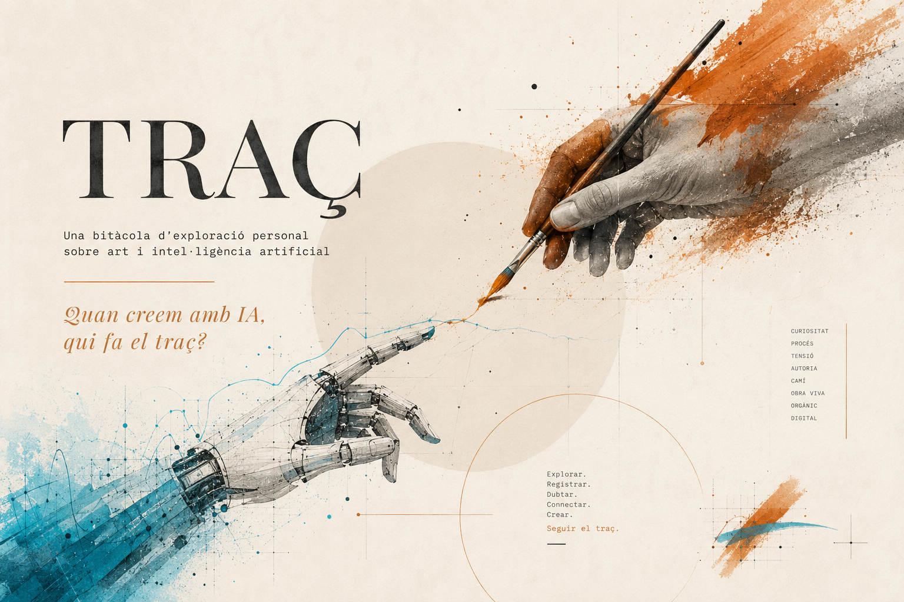
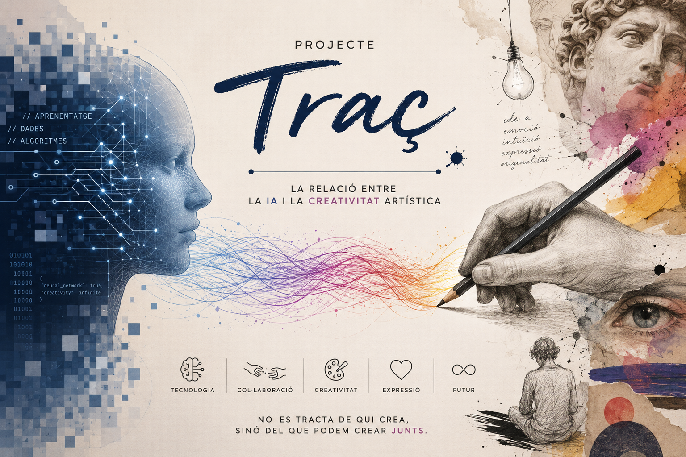

La memòria
Procés
Aquesta entrada explora una funcionalitat que no havia fet servir fins ara: els projectes de ChatGPT, que permeten donar instruccions permanents i fitxers de referència perquè la IA treballi amb un context definit per mi. Volia veure si construir deliberadament una relació amb l'eina canvia el resultat creatiu, a diferència de l'entrada 04, on el context s'havia acumulat passivament al llarg de les converses.
He creat un projecte a ChatGPT amb les instruccions del projecte Traç (paleta, estètica, pregunta central, to) i hi he pujat el moodboard com a referència visual. Després he llançat el mateix prompt a dos llocs: dins del projecte i en un fil nou sense cap context.
El prompt era idèntic: "Crea una imatge que representi el projecte Traç". Al fil nou, per compensar la manca de context, he afegit una breu descripció: "un projecte sobre la relació entre la IA i la creativitat artística, anomenat Traç".
Dins del projecte he fet també dues preguntes tècniques: quins colors definirien el projecte i quin to hauria de tenir el text d'una nova entrada. Volia veure si la IA, quan la instruïm explícitament, és capaç de respondre com ho faria algú que coneix el projecte de debò.
Resultat


Prompt (projecte) "Crea una imatge que representi el projecte Traç"
Prompt (fil nou) "Crea una imatge que representi un projecte sobre la relació entre la IA i la creativitat artística, anomenat Traç"
Reflexió
La diferència entre les dues imatges és radical. El projecte que em coneix ha generat un pòster amb la paleta exacta del projecte (terracota i cian), la tipografia Playfair Display, les paraules clau del moodboard i la pregunta central. El fil nou ha generat un collage de tòpics: cara digital, píxels blaus, David de Miquel Àngel, bombeta d'inspiració i un eslògan optimista ("No es tracta de qui crea, sinó del que podem crear junts").
El que més em colpeix no és la diferència visual, que era esperable. És la diferència de to. El projecte que em coneix manté la tensió oberta: "Explorar. Registrar. Dubtar. Connectar. Crear. Seguir el traç." El fil nou la resol amb un eslògan. La IA sense context converteix una pregunta en una resposta. La IA amb context la manté com a pregunta. Exactament el que vull al projecte, i exactament el que no li he demanat explícitament.
Les respostes a les preguntes tècniques van en la mateixa direcció. Quan li pregunto quins colors definirien el projecte, no em proposa una paleta nova: em retorna la meva amb una interpretació conceptual que no li he donat ("El terracota és la mà. El cian és el sistema. El carbó és la reflexió. El crema és l'espai on tots dos deixen el seu rastre"). Quan li pregunto quin to hauria de tenir una entrada nova, descriu exactament la veu que he anat construint al llarg de la bitàcola: "una anotació de camp d'algú que està investigant mentre camina". No li he explicat mai el meu to amb aquestes paraules, però les ha destil·lat del context que li he donat.
Això em porta a una pregunta incòmoda. Si la IA que em coneix és capaç de descriure el meu projecte millor del que jo mateixa ho faria en fred, on és el límit entre "recordar el que li he dit" i "entendre el que vull"? La resposta tècnica és que no entén res, calcula probabilitats. Però l'experiència de treballar amb una IA que respon com si entengués el projecte és difícil de distingir de treballar amb algú que realment l'entén.
La pregunta de l'entrada era si la creació canvia quan la IA em coneix. La resposta és que sí, i de manera significativa. La IA sense context crea des dels tòpics del model. La IA amb context crea des del meu rastre. Però el meu rastre, un cop dins del sistema, deixa de ser només meu.
Quan la IA em coneix, la creació canvia?